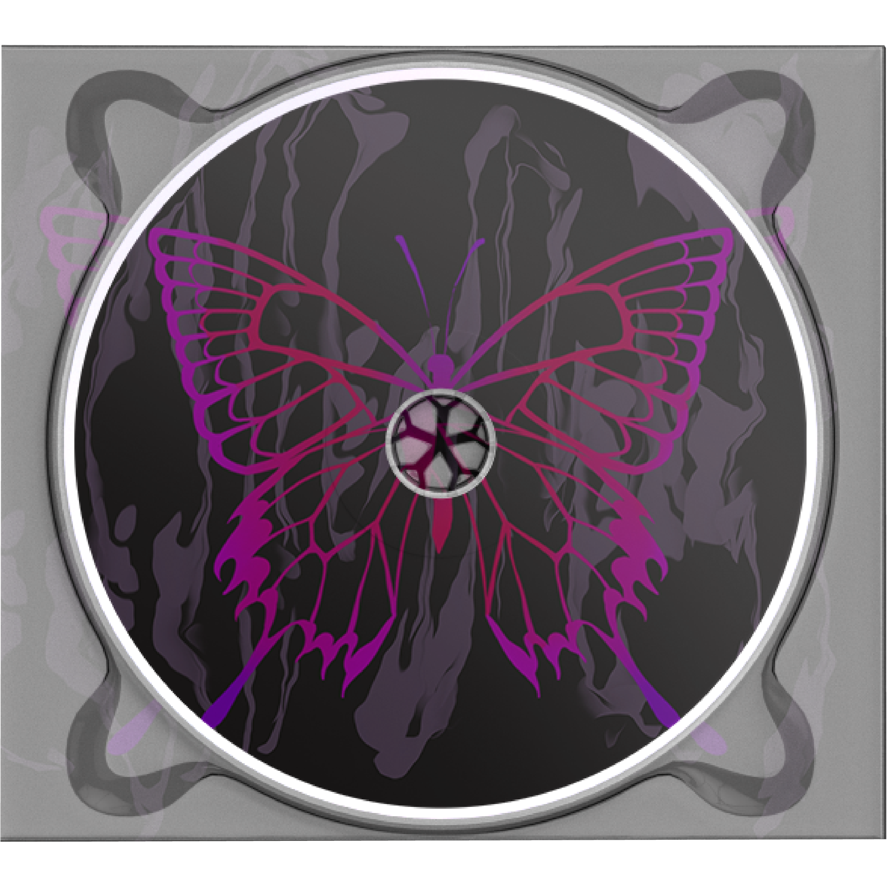
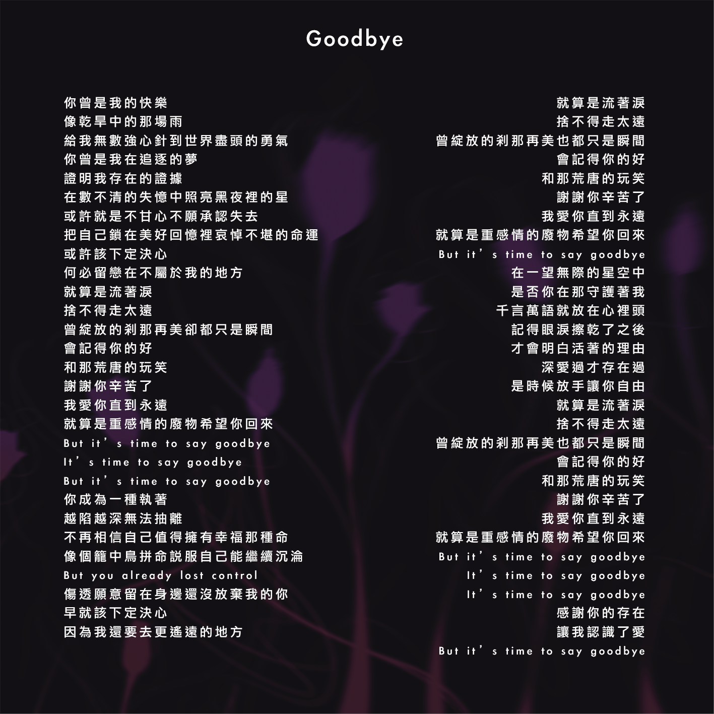
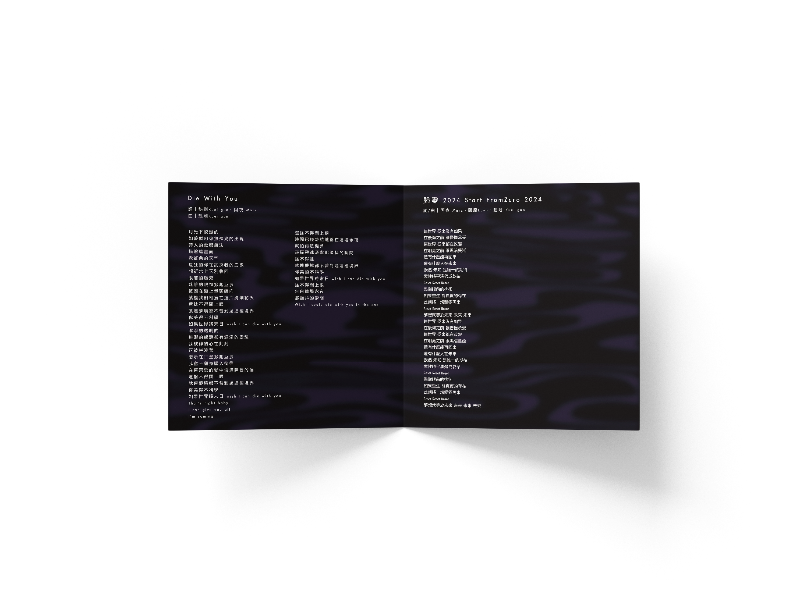
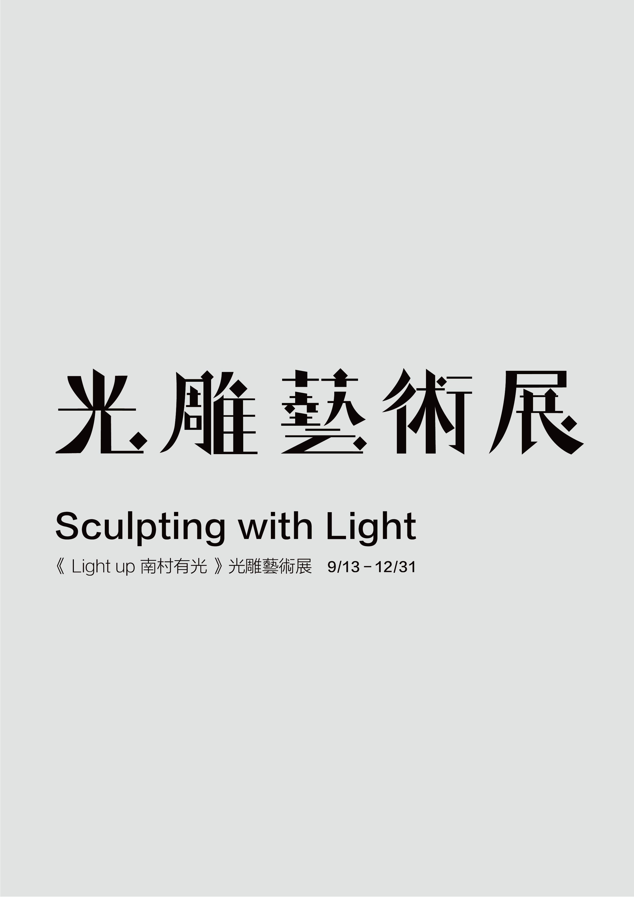
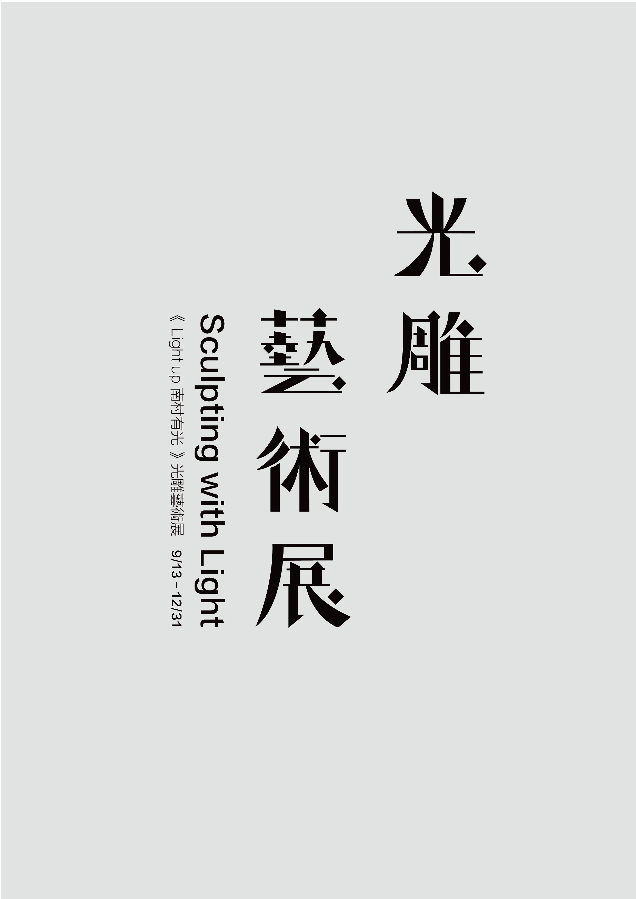
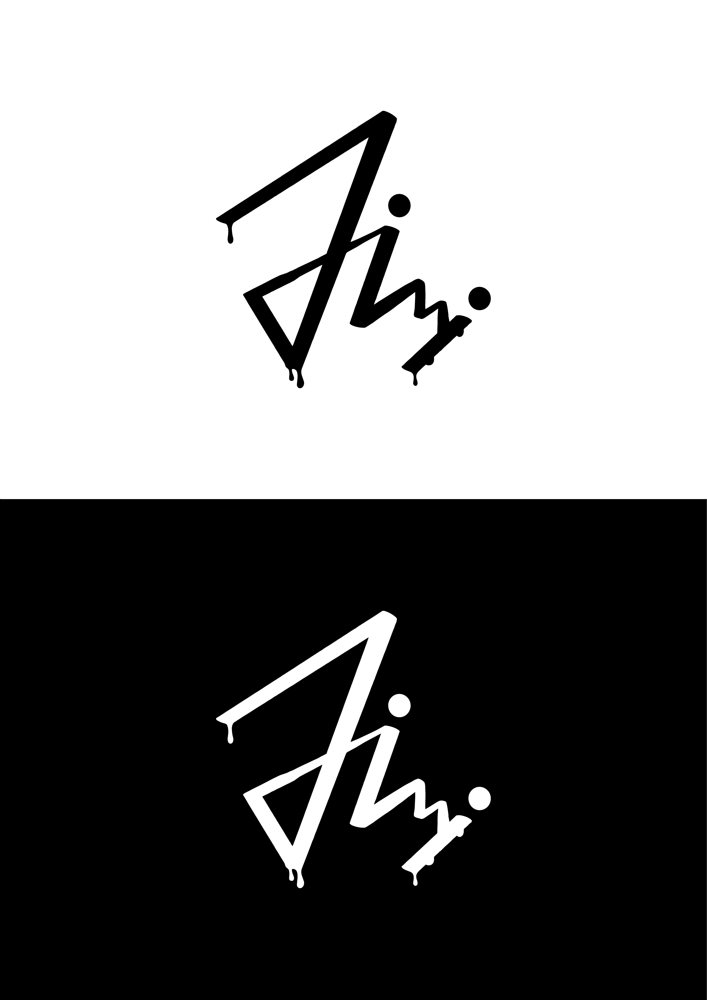
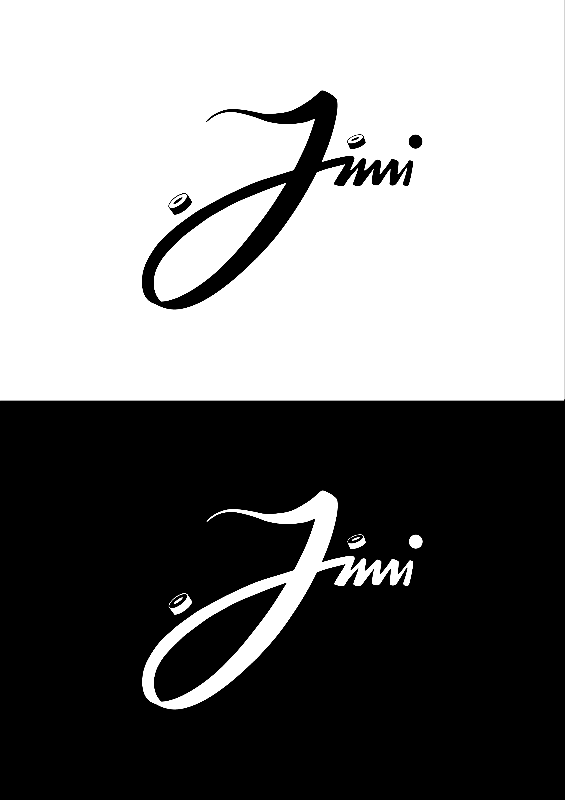
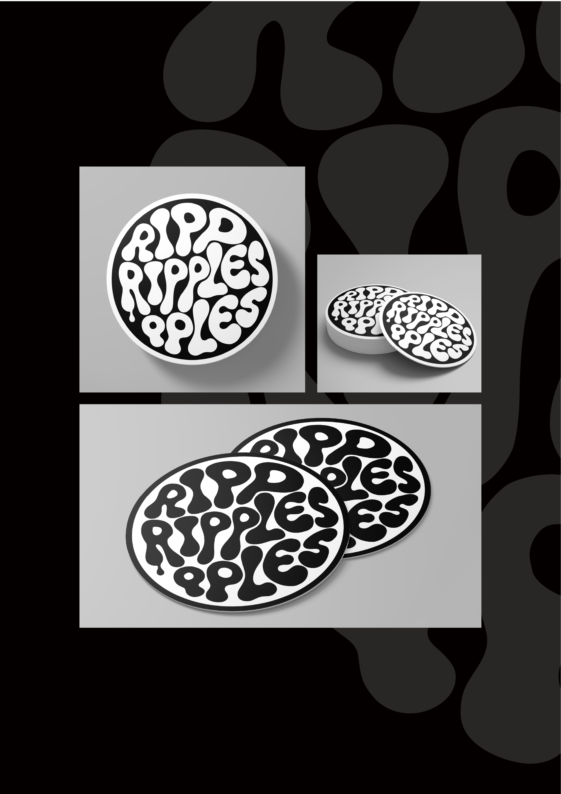

Portfolio 2024 – 2025
PATRICK'S PROFILE
Album Project
TRASH《幸福的末班車》專輯設計

專輯封面

專輯背面
Album Project
歌詞內頁
CD
CD


Album Project
歌詞本設計


Album Project
Mockup & Presentation
實體展示與總覽畫面
實體展示與總覽畫面

歌詞本展示

歌詞本 mockup
Light Exhibition
《光雕藝術展 – Sculpting with Light》
字體橫式 / 直式組合
字體橫式 / 直式組合

橫式字體海報

直式字體海報
Light Exhibition
Typographic Version · Application
字體延伸應用
字體延伸應用

橫式主視覺

直式主視覺
Light Exhibition
Additional Visuals · Concept Mockups
視覺與概念模型
視覺與概念模型

橫幅mockup

字體與直式海報展示
Logo Design Exercise
Logo design and extended applications
logo設計和延伸應用
logo設計和延伸應用

logo 1

延伸應用
Logo Design Exercise
Logo design and extended applications
logo設計和延伸應用
logo設計和延伸應用

logo 2

延伸應用
Personal Logo Design
Logo design and extended applications
logo設計和延伸應用
logo設計和延伸應用

logo 1

延伸應用
Personal Logo Design
Logo design and extended applications
logo設計和延伸應用
logo設計和延伸應用

logo 2

延伸應用
Coaster Design
Coaster full-print design and display
杯墊滿版設計與展示
杯墊滿版設計與展示

Ripples

mockup